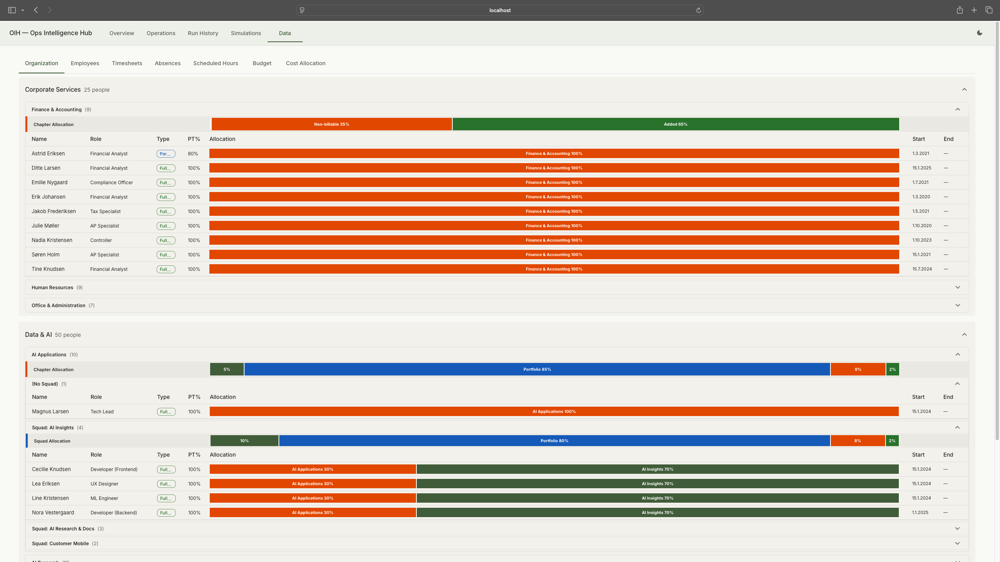
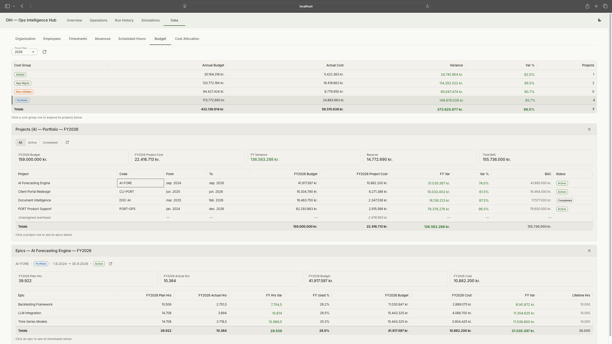
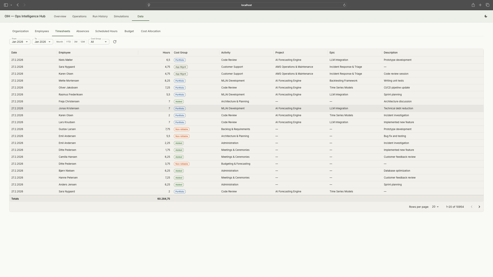

Ops Intelligence Hub
BI dashboards show what happened. This one tells you what to do about it, and shows its working.
Two systems built side by side. The first: deterministic workforce analytics with AI-generated recommendations where every claim traces back to the analytics that produced it. The second: a deterministic synthetic organisation with embedded test scenarios — and a multi-turn, LLM-driven simulation loop that tests recommendations over time.
- The problem: BI dashboards show what happened. Managers need what to do about it, with reasoning they can audit.
- The decision: deterministic analytics produce every number, AI only interprets them, and each claim traces to its source data.
- What I built: a workforce decision-intelligence hub, a deterministic synthetic organisation with embedded test scenarios, and a multi-turn simulation loop that tests recommendations over time.
- What I learned: this is where autopilot was built. Backend work ran unattended through the pipeline while I focused on the judgement calls.
- Why it matters: separating what the AI generates from what verifies it, the same pattern that runs through everything here.
Where it stands
- Shipped: 11 deterministic analytics modules, the three-agent LangGraph pipeline, the human approval gate, the synthetic organisation, the multi-turn simulation engine, and an MCP server exposing nine analytics tools.
- In progress: observability (OpenTelemetry → Langfuse), analytics reconciliation, and UI unification.
- Verified: 1,600+ automated tests (Python + TypeScript), green as of August 2026.
- Known limitations: a localhost tool with no authentication layer, and insight-card values are not yet evidence-gated the way recommendations are.
How it started
I've spent years accounting for where hours went, arguing for budget adjustments, and fighting time registration structures that were too fine-grained to be useful. The data existed, but the analysis was always manual: spreadsheets, gut feel, and executive summaries that cherry-picked data points with no traceability. I wanted to build the analysis tooling I wished I had.
OIH is also the project where autopilot mode in Watchfloor was built and tested. The backend work ran unattended through the pipeline while I focused on the parts that needed human judgement.
What it does
The system has three layers, and the separation between them is the point.
11 analytics modules. Deterministic by construction — no clock, no randomness, config-driven thresholds — with a pure computation core behind a thin I/O layer. Same input, same output, every time.
The LLM never computes a number that reaches a stakeholder: every evidence reference in a recommendation is matched against the computed results — unmatched references are stripped, and recommendations without evidence are dropped.
Default mode gates every recommendation, and a timeout auto-rejects — never auto-approves. No AI recommendation reaches a stakeholder without documented human review. Evidence is immutable after approval.
When someone challenges a recommendation ("Why should we move two people to Team B?"), the claim traces through the agent's reasoning, through the tool call, down to the specific analytics function, entity, and period that produced the number.
This separation matters because traceability is not optional in financial services. When agents compute, their outputs are non-reproducible. When agents interpret deterministic results, every claim can be verified independently.
Two systems, not one
The OIH system analyses workforce data and recommends actions. But how do I test whether those recommendations are any good? I needed a second system: a synthetic world that the first system operates on, where I can run scenarios, observe consequences, and reset to baseline.
GDPR constraints meant I couldn't use real workforce data. So I built a synthetic organisation: roughly 250 employees across six departments in a fictitious Nordic fintech, with five years of planning data (allocations, norm hours, budgets) and two-plus years of realised timesheets and absences (with Danish categories: holiday, sickness, parental leave, care days, education). A two-layer cost allocation model distributes employee time across cost groups (AMS, Portfolio, Non-billable, Added Value) through team-level splits. The data generator is deterministic: same seed, same output, every run — 139,000+ timesheet rows in the current build.
Seven realistic problem scenarios are embedded in the generated data: the ML Platform team seeded at 112–130% overload from Q3 2024, portfolio budget pressure, Backend Core with 40% missing timesheet entries, a bench period after a project ends, cost allocation drift between AMS and Portfolio, systematic overtime across multiple teams, and external dependency concentration. These aren't edge cases. They're the patterns I've seen repeatedly over 25 years. This isn't sample data. It's a test harness designed to stress every analytics module.

Data viewer: the synthetic organisation with departments, teams, and the two-layer allocation model. Tap to expand.

Budget data: cost groups, project allocations, and epic-level breakdown. Tap to expand.

Generated timesheets: date, employee, hours, cost group, activity, and project. Tap to expand.
Simulating decisions
Static test data can verify that analytics modules compute correctly, but it can't verify that the system handles a changing organisation over time. The simulation engine closes the loop: take the OIH system's recommendations, apply them to the synthetic organisation, and play the consequences forward.
Organisational decisions don't land cleanly. Moving two people to a new team doesn't guarantee full productivity on day one. Hiring takes longer than planned. A parental leave creates a gap that ripples through allocations. The simulation engine models these effects with realistic variance: some actions have the intended effect, some partially, some create side effects. This is where the LLM fits naturally. It generates plausible variation in outcomes, not exact predictions. The simulation runs turn by turn, not just once. Each turn advances the organisation forward: new timesheets, absences, allocations. New problems emerge. The OIH system analyses again. Over multiple turns, it simulates a living organisation evolving over months. And because the baseline data generator is deterministic, I can always reset to a known starting point and run a different sequence of decisions.
Each cycle tests whether the system's recommendations actually help. The simulation is the test harness, not the product.
I could see this approach being useful in many projects: building a synthetic environment alongside the system so it can be tested under conditions that resemble reality, not just against static fixtures.
Design decisions
- No classifier, no dynamic routing. Seven fixed analysis scenarios. A classifier adds latency and failure modes for no benefit when the scenario set is known.
- No vector database. 100% structured data. Adding RAG to a system with deterministic queries would add complexity without adding value. EuLex is the RAG project.
- Run-based, not chat-based. Each analysis is a complete, independent run. No conversation history. State is ephemeral within a run and persisted to PostgreSQL.
- Config-driven thresholds. All business rules in YAML, not code. "Over-allocated" means >110%, and that number lives in a config file, not buried in Python.
- EVAL = PROD. The same principle from EuLex: the evaluation framework calls the exact same code paths as the production API. Seven scorers, built incrementally as each became testable against real data.
Reflections
This is the project closest to the work I've done professionally. The problem is real, the data patterns are real, and the frustration that motivated it is real. Building it on synthetic data with embedded scenarios turned out to be an advantage, not just a GDPR workaround. The scenarios are reproducible, the analytics modules can be tested against known ground truth, and the whole system can be demonstrated without access to anyone's actual workforce data.
The pattern I keep coming back to is the same one from Watchfloor: separate what the AI generates from what verifies it. In the pipeline, deterministic tools verify AI-generated code. On the watch floor, structured data provides the audit trail. Here, deterministic analytics produce the numbers and AI agents interpret them. The AI is valuable for synthesis and recommendations. It's not trustworthy for computation. Every project has reinforced that distinction.
What went wrong
The biggest lesson: I should have started with the data. I built analytics modules, agent orchestration, and UI components before the synthetic data model was solid. That meant constantly retrofitting as the data shape changed. Everything in a system like this starts with data. The structure of the timesheets, the allocation model, the absence categories. Getting those right first would have saved weeks of rework. It's the kind of mistake that sounds obvious in hindsight, but the pull to build the interesting parts first is strong.
A smaller but painful lesson: the LLM observability tool (Langfuse) initially shared a database with the application. A routine database reset during development wiped all the observability data along with it. Observability data is production data. It gets its own database.
Repository
Available when the project reaches a presentable state